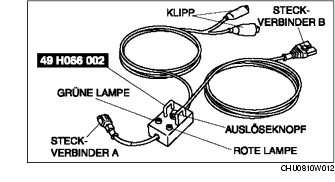

1. Vor der Verwendung des SST (49 H066 002) seine Funktion überprüfen.

Prüfvorgang
1. Die unten aufgeführten Schritte zur Überprüfung des SST (49 H066 002) befolgen.
• Falls nicht der Tabelle entsprechend, das SST (49 H066 002) aufgrund des Defektes austauschen.
Vorsicht
• Kein fehlerhaftes SST (49 H066 002) verwenden. Anderenfalls können der Airbag oder der Gurtstraffer versehentlich ausgelöst werden.
Achtung
• Da die zulässige Spannung für das SST (49 H066 002) 12 V beträgt, keine 24 V-Spannungsquelle anschließen, da diese das SST beschädigt. Immer nur eine 12 V-Spannungsquelle verwenden.
Schritt
Prüfvorgang
Lampe
Grün
Rot
1
Den roten Klipp der Stromversorgung an den Pluspol der Batterie, den schwarzen an den Minuspol anschließen.